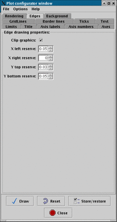

Next: Plot background:
Up: The plot configuration window
Previous: Graphics Rendering Hints:

This page allows you to change the amount of space reserved around the
plot for displaying titles and axis labels etc.
It also clips any points of any of the plotted spectra that lie
outside the bounds of the data limits (this is not normally the case,
unless you've defined data limits of your own).
Next: Plot background:
Up: The plot configuration window
Previous: Graphics Rendering Hints:
SPLAT-VO -- A VO-enabled Spectral Analysis Tool
Starlink User Note 243
Peter W. Draper
04 October 2005
E-mail:splat@star.rl.ac.uk
Copyright © 2001-2005 Council for the Central Laboratory of the
Research Councils \& \
2005 Particle Physics and Astronomy Research Council